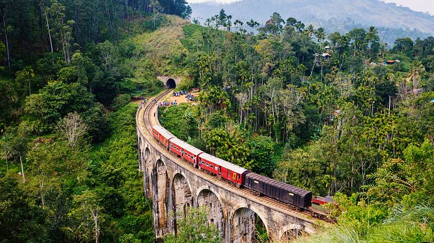
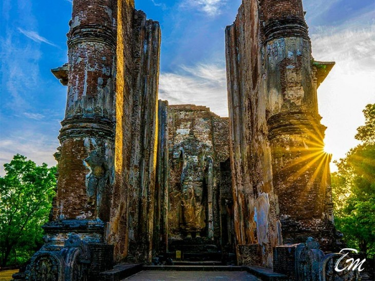
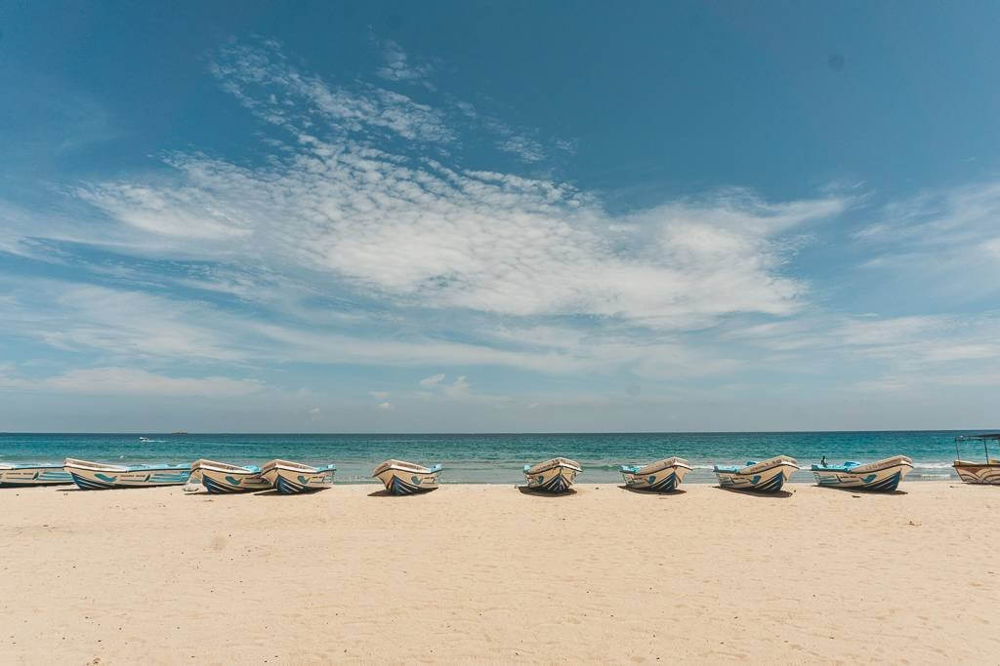

Welcome to the paradise on Earth!
1. Colombo

Colombo is the executive and judicial capital and largest city of Sri Lanka by population. According to the Brookings Institution, Colombo metropolitan area has a population of 5.6 million,and 752,993 in the Municipality. It is the financial centre of the island and a tourist destination. It is located on the west coast of the island and adjacent to the Greater Colombo area which includes Sri Jayawardenepura Kotte, the legislative capital of Sri Lanka, and Dehiwala-Mount Lavinia. Colombo is often referred to as the capital since Sri Jayawardenepura Kotte is itself within the urban/suburban area of Colombo. It is also the administrative capital of the Western Province and the district capital of Colombo District. Colombo is a busy and vibrant city with a mixture of modern life, colonial buildings and monuments.
2. Sigiriya

Sigiriya or Sinhagiri (Lion Rock) is an ancient rock fortress located in the northern Matale District near the town of Dambulla in the Central Province, Sri Lanka. It is a site of historical and archaeological significance that is dominated by a massive column of rock approximately 180 metres (590 ft) high.
According to the ancient Sri Lankan chronicle the Cūḷavaṃsa, this area was a large forest, then after storms and landslides it became a hill and was selected by King Kashyapa (477 – 495 AD) for his new capital. He built his palace on top of this rock and decorated its sides with colourful frescoes. On a small plateau about halfway up the side of this rock he built a gateway in the form of an enormous lion. The name of this place is derived from this structure; Sīnhāgiri, the Lion Rock (an etymology similar to Sinhapura, the Sanskrit name of Singapore, the Lion City).
3. Nuwara Eliya

Nuwara Eliya is a city in the hill country of the Central Province, Sri Lanka. Its name means "city on the plain (table land)" or "city of light". The city is the administrative capital of Nuwara Eliya District, with a picturesque landscape and temperate climate. It is at an altitude of 1,868 m (6,128 ft) and is considered to be the most important location for tea production in Sri Lanka. The city is overlooked by Pidurutalagala, the tallest mountain in Sri Lanka. Nuwara Eliya is known for its temperate, cool climate – the coolest area in Sri Lanka.
4. Kandy

Kandy is a major city in Sri Lanka located in the Central Province. It was the last capital of the ancient kings' era of Sri Lanka. The city lies in the midst of hills in the Kandy plateau, which crosses an area of tropical plantations, mainly tea. Kandy is both an administrative and religious city and is also the capital of the Central Province. Kandy is the home of the Temple of the Tooth Relic (Sri Dalada Maligawa), one of the most sacred places of worship in the Buddhist world. It was declared a world heritage site by UNESCO in 1988. Historically the local Buddhist rulers resisted Portuguese, Dutch, and British colonial expansion and occupation.
5. Galle

Galle (formerly Point de Galle) is a major city in Sri Lanka, situated on the southwestern tip, 119 kilometres (74 mi) from Colombo. Galle is the provincial capital and largest city of Southern Province, Sri Lanka and is the capital of Galle District. Galle was known as Gimhathiththa before the arrival of the Portuguese in the 16th century, when it was the main port on the island. Ibn Batuta, a Moroccan Berber Muslim traveller in the 14th century, referred to it as Qali. Galle reached the height of its development in the 18th century, during the Dutch colonial period. Galle is the best example of a fortified city built by the Portuguese in South and Southeast Asia, showing the interaction between Portuguese architectural styles and native traditions. The city was extensively fortified by the Dutch during the 17th century from 1649 onwards. The Galle fort is a world heritage site and is the largest remaining fortress in Asia built by European occupiers.
Other prominent landmarks in Galle include the city's natural harbour, the National Maritime Museum, St. Mary's Cathedral founded by Jesuit priests, one of the main Shiva temples on the island, and Amangalla, the historic luxury hotel. On 26 December 2004, the city was devastated by the massive tsunami caused by the 2004 Indian Ocean earthquake, which occurred off the coast of Indonesia a thousand miles away. Thousands were killed in the city alone. Galle is home to the Galle International Stadium, which is considered to be one of the most picturesque cricket grounds in the world. The ground, which was severely damaged by the tsunami, was rebuilt and test matches resumed there on 18 December 2007.
6. Ella

Ella is a small town in the Badulla District of Uva Province, Sri Lanka governed by an Urban Council. It is approximately 200 kilometres (120 mi) east of Colombo and is situated at an elevation of 1,041 metres (3,415 ft) above sea level. The area has a rich bio-diversity, dense with numerous varieties of flora and fauna. Ella is surrounded by hills covered with cloud forests and tea plantations. The town has a cooler climate than surrounding lowlands, due to its elevation. The Ella Gap allows views across the southern plains of Sri Lanka.
7. Anuradhapura

Anuradhapura is a major city in Sri Lanka. It is the capital city of North Central Province, Sri Lanka and the capital of Anuradhapura District. Anuradhapura is one of the ancient capitals of Sri Lanka, famous for its well-preserved ruins of an ancient Sinhala civilisation. It was the third capital of the kingdom of Rajarata, following the kingdoms of Tambapanni and Upatissa Nuwara. The city, now a World Heritage Site, was the centre of Theravada Buddhism for many centuries. The city lies 205 km (127 mi) north of the current capital of Colombo in the North Central Province, on the banks of the historic Malvathu River. It is one of the oldest continuously inhabited cities in the world and one of the eight World Heritage Sites of Sri Lanka.
8. Polonnaruwa

Poḷonnaruwa, also referred as Pulathisipura and Vijayarajapura in ancient times, is the main town of Polonnaruwa District in North Central Province, Sri Lanka. The modern town of Polonnaruwa is also known as New Town, and the other part of Polonnaruwa remains as the royal ancient city of the Kingdom of Polonnaruwa. The second oldest of all Sri Lanka's kingdoms, Polonnaruwa was first established as a military post by the Sinhalese kingdom. It was renamed Jananathamangalam by the Chola dynasty after their successful invasion of the country's then capital, Anuradhapura, in the 10th century. The Ancient City of Polonnaruwa has been declared a World Heritage Site. Modern Polonnaruwa is undergoing a major development project known as the "Awakening of Polonnaruwa," championed by former President Maithripala Sirisena. It envisions the development of all sectors in Polonnaruwa including roads, electricity, agriculture, education, health and environment.
9. Yala National Park

Yala National Park is the most visited and second largest national park in Sri Lanka, bordering the Indian Ocean. The park consists of five blocks, two of which are now open to the public, and also adjoining parks. The blocks have individual names such as, Ruhuna National Park (Block 1), and Kumana National Park or 'Yala East' for the adjoining area. It is situated in the southeast region of the country, and lies in Southern Province and Uva Province. The park covers 979 square kilometres (378 sq mi) and is located about 300 kilometres (190 mi) from Colombo. Yala was designated as a wildlife sanctuary in 1900, and, along with Wilpattu was one of the first two national parks in Sri Lanka, having been designated in 1938. The park is best known for its variety of wild animals. It is important for the conservation of Sri Lankan elephants, Sri Lankan leopards and aquatic birds.
10. Nilaveli

Nilaveli is a coastal resort town and suburb of the Trincomalee District, Sri Lanka located 16 km northwest of the city of Trincomalee. A historically popular Tamil village and tourist destination of the district alongside the nearby Uppuveli, the numbers of visitors declined following the 2004 Indian Ocean tsunami and Sri Lankan Civil War, but have risen again since 2010. Pigeon Island National Park, one of the two marine national parks of the region is situated 1 km off the coast of Nilaveli, its many species of vegetation, coral and reef fish contributing to Nilaveli's rich biodiversity.